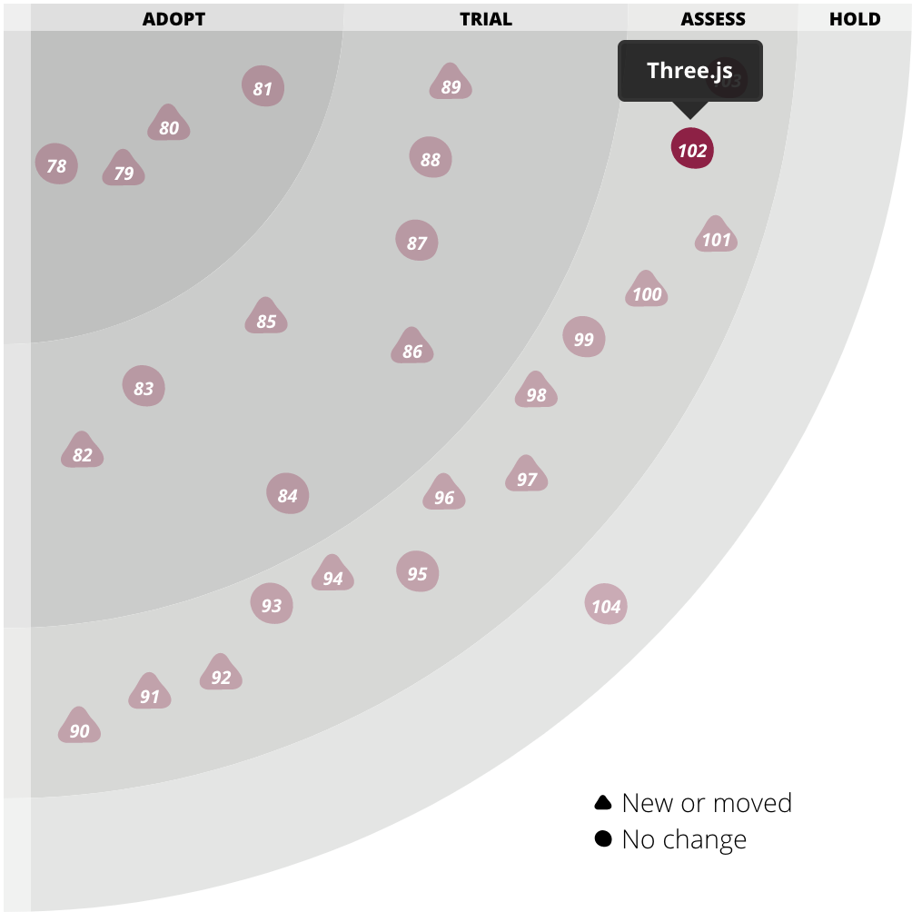
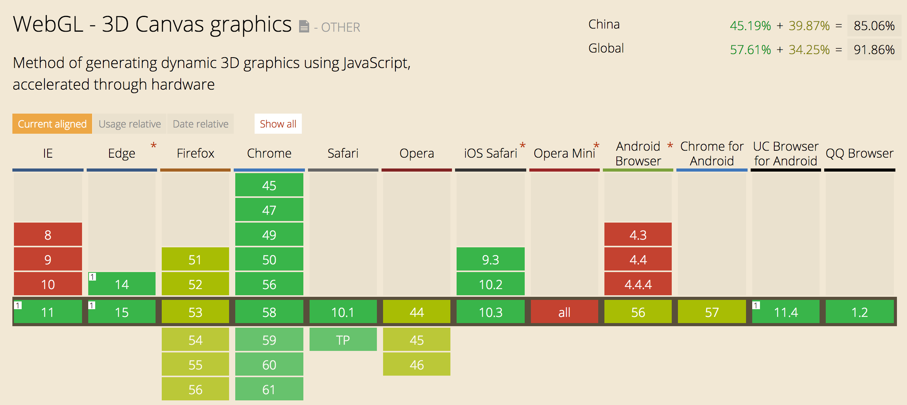
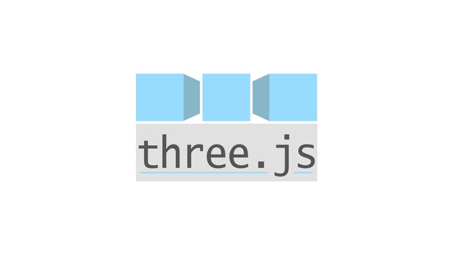
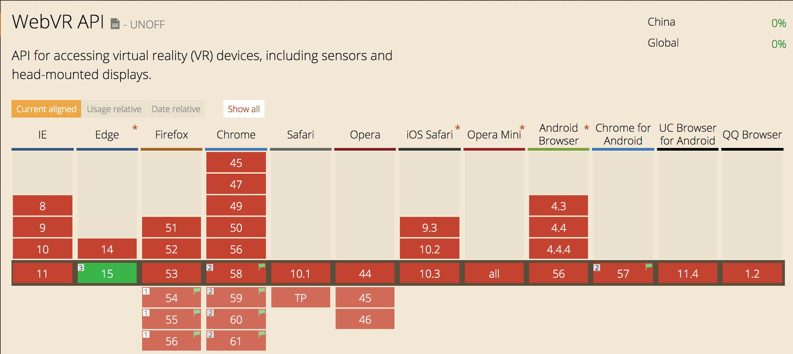
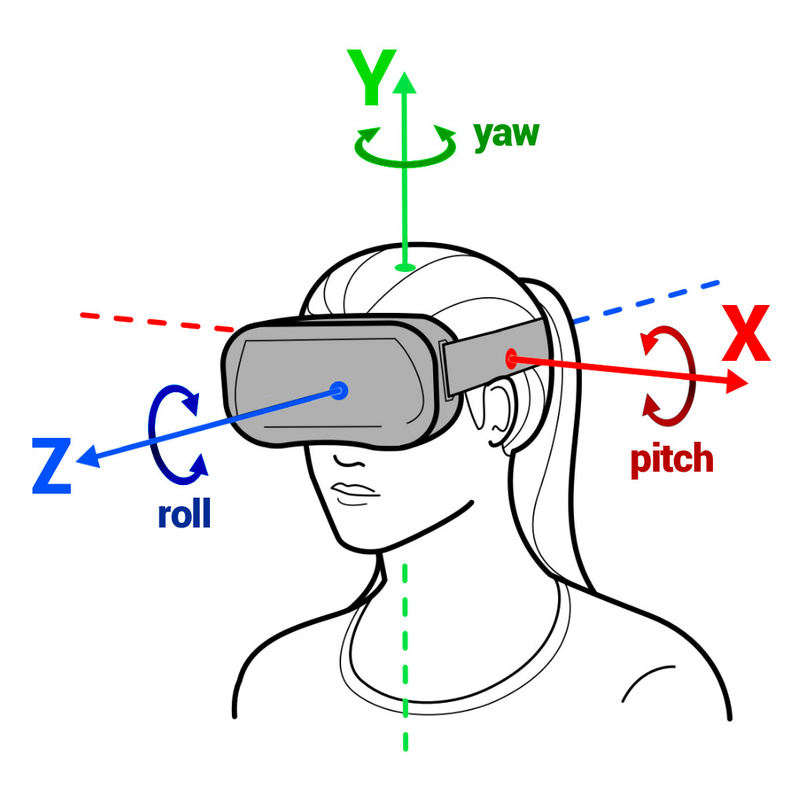
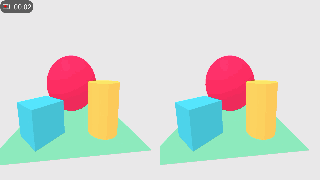
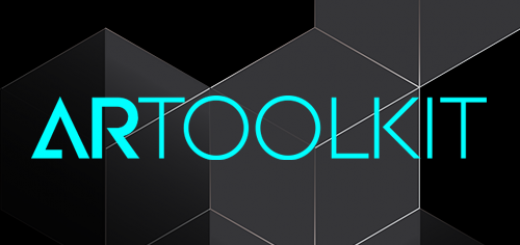

Three.js
Make VR/AR Every Where
Created by Xing
Tech Radar
What is WebGL
Web Graphics Library
Compatibility
What is Three.js
VR/AR
VR
WebVR
WebVR Compatibility
VR Controll

navigator.getVRDisplays().then(function(display) {
//TODO
})
VR Camera
THREE.WebVRCamera = function ( display, renderer ) {
//TODO
}
VR Example
AR

JSARToolKit
Three.js
Step BY Step
AR Example

Q&A
Thanks
Ref:
Three.JSWebVR
ARToolKit
CanIUse